From ML experiments to production:
Versioning and Reproducibility with MLV-tools
Stéphanie Bracaloni and Sarah Diot-Girard
About Us
Sarah Diot-Girard
Data Scientist since 2012
Interested in DataOps and Ethics
 @SgdJlbl
@SgdJlbl
Stéphanie Bracaloni
Software Engineer since 2013
Automation and Code Quality
@sbracaloni
The story, all names, characters, and incidents portrayed in this production are fictional. All similarities with existing past or future Data Science projects are purely coincidental.
Confusion Matrix

ROC Curve
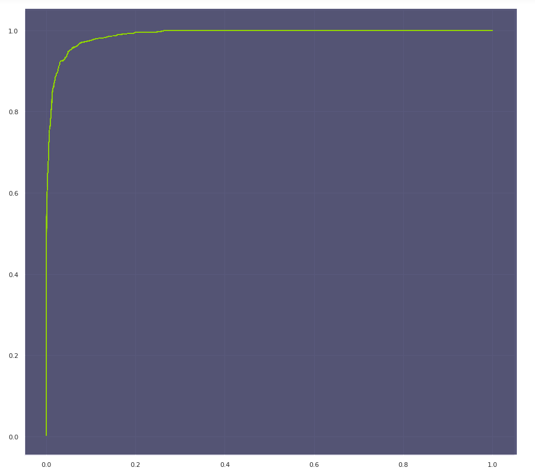
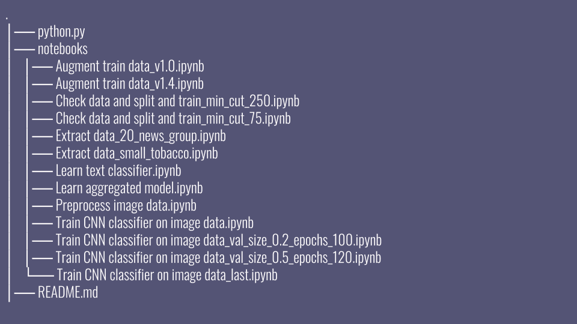
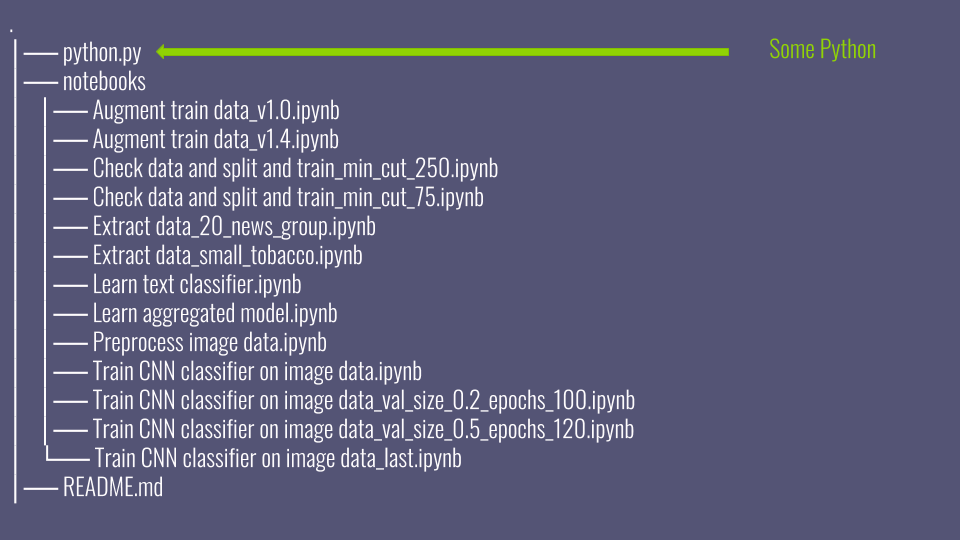
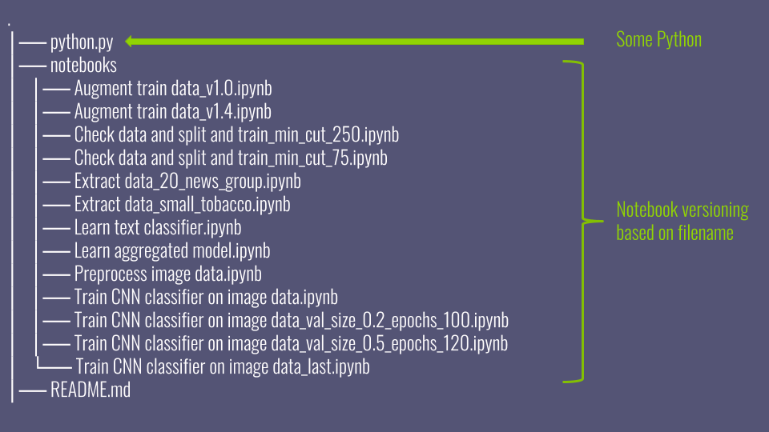
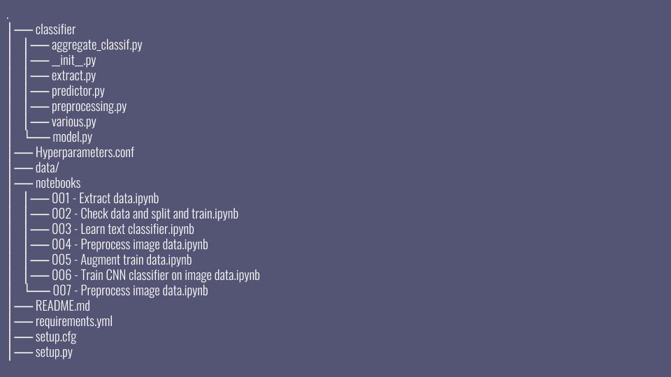
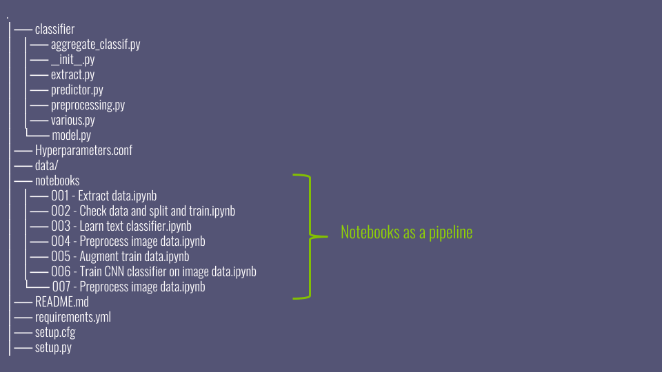
 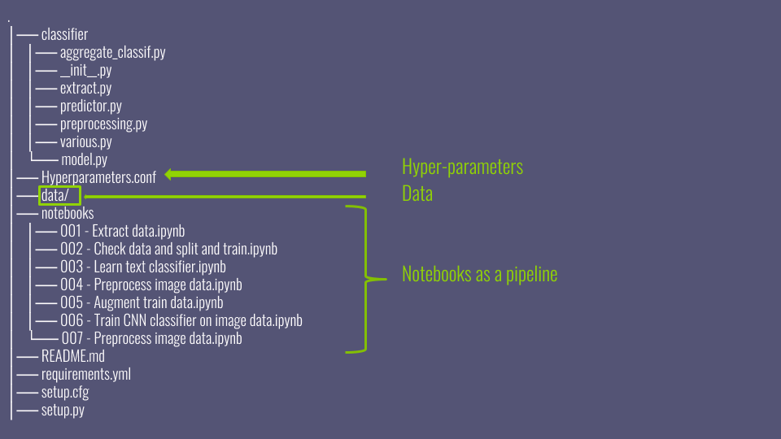
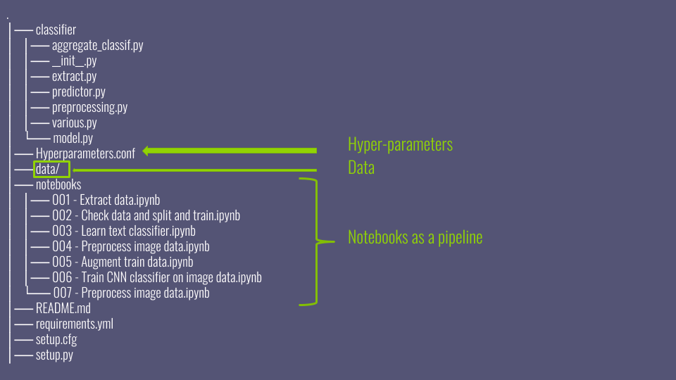
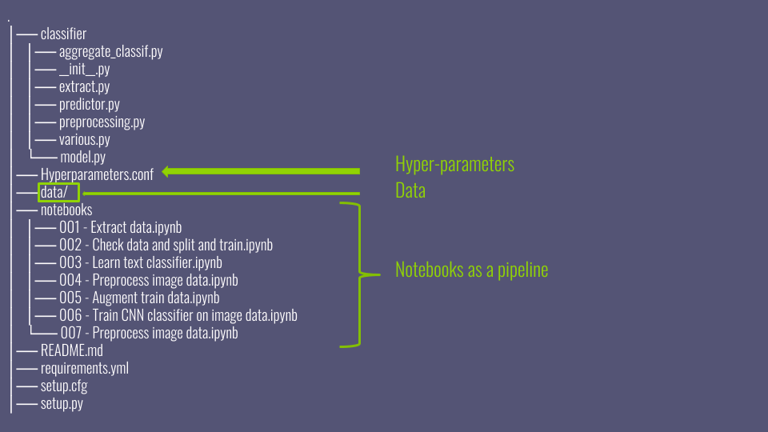
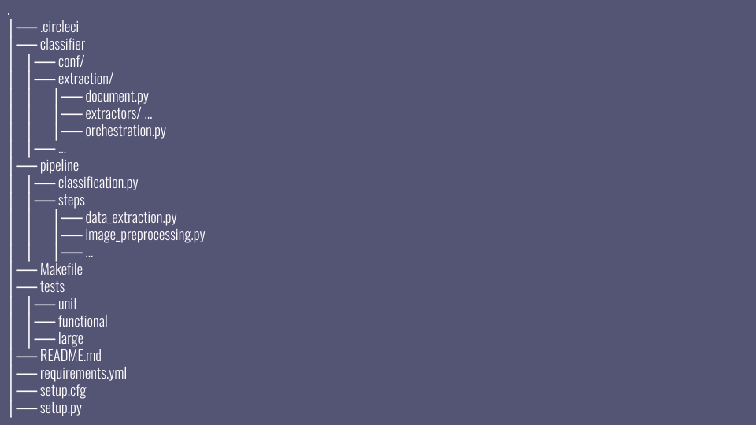
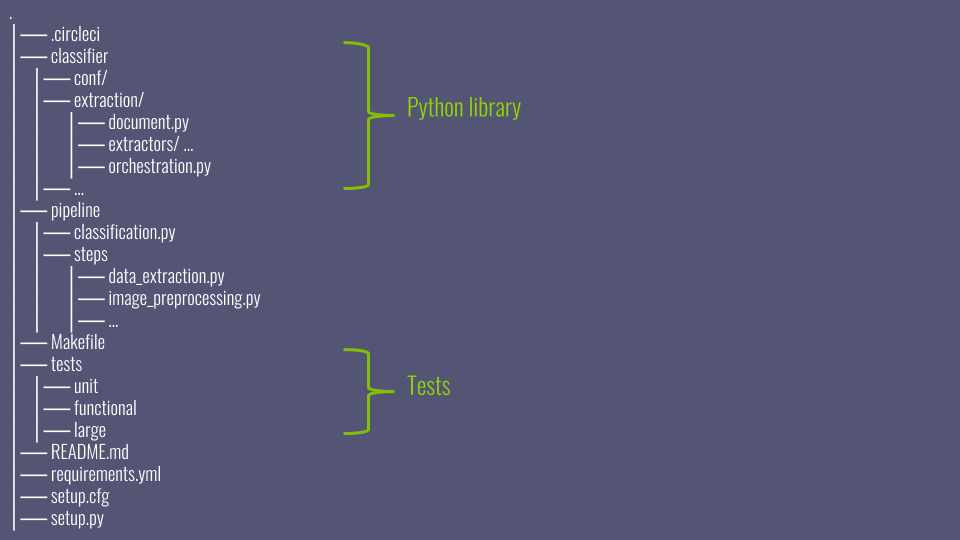
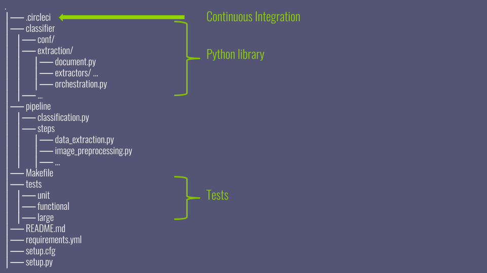
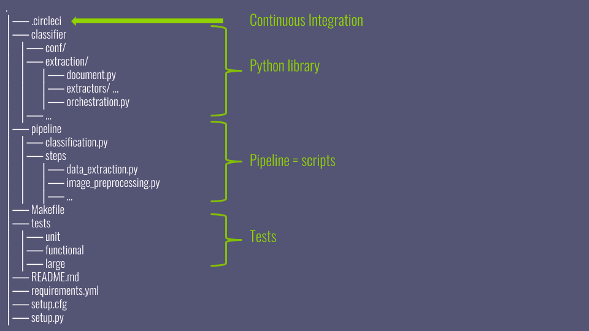
POC vs PROD
vs Data Scientist
vs Software Engineer
Confusion Matrix
ROC Curve
├── raw_data.csv
├── cleaned_data.csv
├── cleaned_data_final.csv
├── cleaned_data_preprocessed_final.csv
└── cleaned_data_preprocessed_final2.csv
Data Versioning
Git
What's not to love?
- Great for code
- Collaborative
- Everyone knows (of) it
Huge datafiles
- Bloats the repository
- Binary?
- So slow and tedious...
Git LFS / Git annex
What's not to love?
- Great for handling larger files
- Git integration
- Open-source
├── raw_data.csv mar 8 12:17
└── preprocessed_data.csv feb 26 13:24
Is DataOps solved?
Not quite yet
For the data scientists
- Modular improvements
- Fast iterations
- Confidence in results
- Cannot loose data
For the engineers
- Full power of IDE
- Functional tests
- CI and production-ready
Current limitations
- DVC is another CLI tool
- Git and DVC checkout for switching branches
Under development
- Checking if all scripts are up-to-date when pushing
- Easily comparing metrics between experiments
- Pipeline packaging (with Debian and Anaconda)
- Dynamically handling of hyperparameters
Future work
DVC pipelines as powerful as scikit-learn pipelines- Cross-validation
- Hyperparameter tuning
Future work
We want to hear about your use cases!We are waiting for your Pull Requests!
 github.com/peopledoc/ml-versioning-tools
github.com/peopledoc/ml-versioning-tools
 github.com/peopledoc/mlv-tools-tutorial
github.com/peopledoc/mlv-tools-tutorial
Fonts: White Rabbit by Matthew Welch Capsuula by Henrich Fichna Icons made by Smashicons, Good Ware, Designmodo, Freepik from www.flaticon.com; license CC 3.0 BY
Contact Us !
sarah_diot-girard@ultimatesoftware.com
stephanie_bracaloni@ultimatesoftware.com